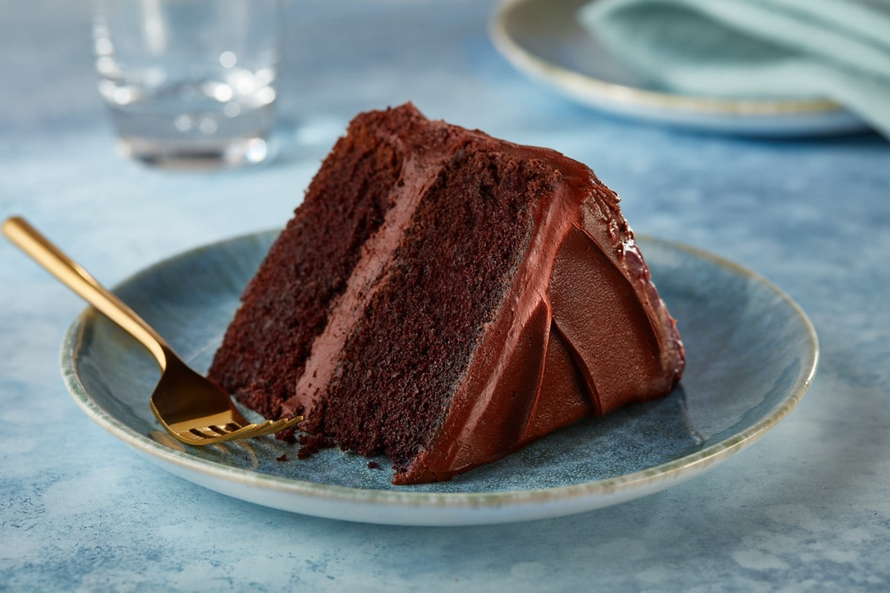

Delicious chocolate cake

Ingredients
- 1 cup butter
- 1 cup water
- 4 tablespoons unsweetened cocoa powder
- ½ buttercup of milk
- 1 teaspoon baking soda
- 2 eggs, beaten
- 1 teaspoon vanilla extract
- 2 cups all-purpose flour
- 2 cups white sugar
- 1 teaspoon ground cinnamon
- ½ teaspoon salt
- ½ cup butter
- ⅓ cup buttermilk
- 4 cups confectioners' sugar
- 1 teaspoon vanilla extract
- 1 cup chopped pecans
- 1 pinch salt
Steps
- Preheat oven to 350 degrees F (175 degrees C). Grease and flour a 9x13
inch pan. In a saucepan, melt 1 cup of butter. Stir in 1 cup water
and 4 tablespoons cocoa powder. Remove from heat and set aside.
- In a medium bowl, dissolve the baking soda in 1/2 cup of buttermilk.
Stir in the eggs and vanilla. Mix in the cooled cocoa mixture.
- In a large bowl, sift together the flour, sugar, cinnamon and salt.
Make a well in the center and pour in the cocoa buttermilk mixture.
Stir until blended. Pour batter into prepared pan.
Bake in the preheated oven for 30 minutes, or until a toothpick inserted
into the center of the cake comes out clean. Ice the cake with Buttermilk
Pecan Icing while it's still warm.
- For the icing: In a large saucepan, melt 1/2 cup butter with
4 tablespoons cocoa. Stir in 1/3 cup buttermilk, and heat until
almost boiling. Stir in confectioners' sugar, vanilla, salt and pecans.
Remove from heat. Mix well and pour over warm cake.
Back to main page